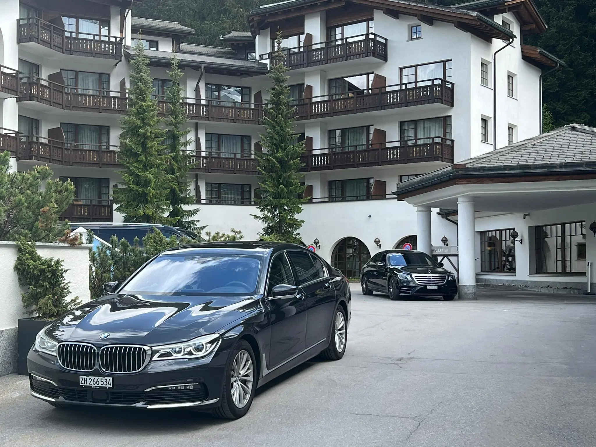

VIP Chauffeur Évian 2026
Discreet limousines with professional chauffeurs for CEOs, delegations, family offices and private guests.
Exclusive chauffeur service for delegations, companies, media teams and VIP guests from 15 to 17 June 2026.
The G7 Summit 2026 will take place in Évian-les-Bains, directly on Lake Geneva and close to the Swiss border. Swiss Rent a Car organises discreet, punctual and comfortable transfers between Zurich, Geneva, Évian, hotels, meeting locations and airports. For international guests, official delegations and business teams, we plan the right mobility solution from arrival to departure.
During the G7 Summit 2026, the entire Lake Geneva region is expected to be highly booked. Swiss Rent a Car plans chauffeur services for VIPs, government delegations, CEOs, international organisations, media teams and corporate hospitality teams.
Discreet limousines with professional chauffeurs for CEOs, delegations, family offices and private guests.
Coordination of multiple vehicles, pickup windows, hotel routes, luggage trips and standby chauffeurs.
Meet & greet, flight tracking and direct rides from GVA, ZRH, Basel and private jet terminals.
Transfers between Évian, Lausanne, Montreux, Geneva, Vevey, Nyon and selected hotels.
Flexible evening rides for receptions, private dinners, media events, conferences and networking appointments.
Route planning with buffer times, permitted drop-off points and ongoing adjustments to traffic conditions.
Popular routes for delegations, business guests and media teams around Évian-les-Bains.

Depending on security requirements, number of guests and luggage volume, we provide the right premium fleet. All bookings can be planned as a single transfer or as a multi-day private driver service.
For the period around the G7 Summit 2026, we recommend booking early. Our team will prepare a tailored offer for a single transfer, chauffeur on call or multi-day support.
Send RequestLuxury limousines, vans and Sprinters for safe, comfortable and representative mobility during the summit.
Whether a single ride, multi-day vehicle disposition or complete mobility planning: Swiss Rent a Car supports you with structured processes, clear communication and reliable chauffeur service.
Coordinated rides between airport, hotel, meeting location, event and return trip.
Vehicle and chauffeur remain available for flexible daily schedules or short-notice changes.
Suitable vehicles for delegations, business guests, security escorts, media or event teams.
Confidential support, professional appearance and smooth processes for demanding guests.
Important information for guests, delegations and companies planning transfers around the summit.
The G7 Summit in Évian-les-Bains is officially announced for 15 to 17 June 2026.
Yes. We organise private transfers from Geneva Airport, private jet terminals, hotels in Geneva and international organisations directly to Évian.
Yes. We coordinate limousines, V-Classes, Sprinters and additional luggage or support vehicles for delegations and corporate teams.
Yes. For international guests, we offer direct transfers from Zurich Airport to Évian as well as stopovers in Zurich, Bern, Lausanne or Montreux.
Only if valid accreditations are available and the authorities permit access. Without authorisation, we plan permitted drop-off points and alternative routes.
Yes. For G7 2026, we recommend day bookings so your chauffeur remains flexible if the schedule changes.